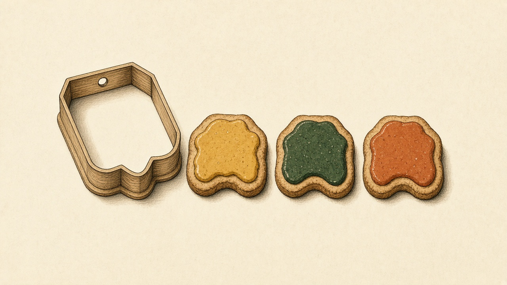

Simple enough to read like a story. Precise enough to survive a technical interview. Every idea is tied to a real file in the Seltra frontend.
Study order: read a chapter, open the file it names, then answer the interview question out loud in under 90 seconds. If you can point at the file while you talk, you understand it.
You do not need to memorize the whole Seltra dashboard. You need a small set of principles, and you need to see those principles in working code. This document does both.
Each idea has three layers:
Read it twice. The first time, only the kid boxes and the project boxes. The second time, the interview boxes. Then rebuild the tiny versions in the practice chapter without looking.
Seltra is a toy shop that builds other toy shops. The website is a book. Each web address is a page in the book. React is the set of stickers and moving parts on the page. Next.js is the printing press that decides which page to print, and whether the printing happens in the back room or in your hands.
There are two programs. You are learning the front one.
| Piece | Where | Job |
|---|---|---|
| Frontend | seltra-web/frontend | What people see and click. React + Next.js. |
| Backend | seltra-web/backend | The office that stores users, stores, products, and emails. The browser asks it questions. |
| Database / login | Supabase | A rented filing cabinet and a lock on the door. |
The frontend talks to the backend with fetch. A public store page can ask the server to fetch, so the secret server address stays off the browser. A signup form runs in the browser, so it uses a public address.
| Path | Meaning |
|---|---|
frontend/app | URLs. A folder is a path. page.tsx is the screen. layout.tsx is the frame around screens. |
frontend/components | Reusable pieces: buttons, header, signup, storefront. |
frontend/context | Shared memory. Today: which store is active. |
frontend/lib | Helpers that are not screens: class names, Supabase, SEO text. |
frontend/hooks | Reusable React behavior, such as toasts. |
frontend/public and assets | Files the browser can request directly, like logos. |
tsconfig.json says "@/*": ["./*"]. That is why imports look like @/components/ui/button instead of ../../components/ui/button. The @ is the frontend folder.
app/layout.tsx. Only the page inside SessionGuard swaps when the URL changes.“Seltra’s UI is a Next.js App Router app. Routes live in app. Interactive UI lives in client components. The root layout wraps every page with theme, store context, and a session guard. Public store pages are async server components that fetch by slug and revalidate every 30 seconds. Forms and the dashboard are client components because they need state and browser APIs.”
React is JavaScript with a drawing language. If these six ideas are solid, React stops feeling magical.
function greet(name) {
return "Hello " + name
}
greet("Ama") // "Hello Ama"A React component is this kind of machine. You give it inputs. It returns a description of UI.
const store = { name: "De Yogo", slug: "de-yogo" }
store.name // "De Yogo"
const products = [{ id: "1", price: 49 }, { id: "2", price: 28 }]
products.map((product) => product.price) // [49, 28]You will map arrays into lists of components. You will read fields off store objects. That is most of the dashboard.
const next = { ...store, name: "New name" }
setData((current) => ({ ...current, email: "a@b.com" }))The three dots copy the old object and then change one field. React notices a new object. If you change the old object in place, React may not notice.
SignupFlow.tsx updates the form like this: setData((current) => ({ ...current, [key]: value })). That is the correct pattern. The function form of setData means “start from the latest copy,” which matters if two updates happen close together.
const { className, variant, size, asChild = false, ...props } = incomingPull out the fields you care about. ...props is “everything else,” passed on to the real button. See components/ui/button.tsx.
const res = await fetch(url)
if (!res.ok) return null
return res.json()await means “pause this function until the answer arrives, but do not freeze the whole program.” getStore in app/store/[slug]/page.tsx is exactly this.
export puts a name on the shelf. import takes it off the shelf. A default export is the main thing in the file. A named export is one of several. page.tsx default-exports the page component and also named-exports metadata.
“React state should be updated immutably. I copy objects with the spread operator and use the functional updater when the next value depends on the previous one. Lists are rendered with map. Server data is loaded with async fetch.”
A component is a cookie cutter. The cutter is the function. Each cookie is what you see on the screen. You can stamp the same cutter many times with different icing.

function Hello({ name }: { name: string }) {
return <p>Hello {name}</p>
}Rules that interviewers listen for:
Hello is a component. hello is just a function, and JSX will not treat it as a component.null.JSX is a letter to the browser written in a mix of HTML and JavaScript. Curly braces mean “stop writing the letter and do some math.”
const price = 49
return <p className="price">GHS {price}</p>| HTML habit | JSX habit | Why |
|---|---|---|
class | className | class is a JavaScript word. |
for | htmlFor | Same reason. for is a loop. |
onclick | onClick | React events are camelCase. |
| close optional tags | <img />, <input /> | JSX must be valid XML-ish. |
| many roots sometimes | one parent, or <>...</> | A component returns one tree. |
This project sets "jsx": "react-jsx" in tsconfig.json. You do not write import React from "react" just to use JSX. The compiler adds the runtime. You still import hooks by name: import { useState } from "react".
Props are instructions from the parent. The child may read them. The child does not edit them. If the child wants a change, it asks the parent by calling a function the parent handed down.
export function SignupFlow({ formPhoto, donePhoto }: { formPhoto: string | null; donePhoto: string | null }) {
// formPhoto and donePhoto are props
}Props are read-only. They can be strings, numbers, objects, arrays, functions, or other components (children).
children is the special prop for whatever you put between the opening and closing tags.
function Card({ children }: { children: React.ReactNode }) {
return <section className="card">{children}</section>
}
// <Card><p>Hi</p></Card>RootLayout receives children and wraps them in theme, store, and session providers. SessionGuard receives children and returns them after setting up logout timers. StoreProvider does the same. This is composition: frames wrap pictures without the picture knowing about the frame.
Data moves down through props. Events move up through callback props. There is no secret tunnel where a child mutates a parent’s variable.
function Parent() {
const [open, setOpen] = useState(false)
return <Child open={open} onClose={() => setOpen(false)} />
}“React data flow is unidirectional. Parents pass state down as props. Children request changes through callbacks. That makes the UI predictable: I can find who owns a value by walking up the tree. When many distant children need the same value, I lift it into context instead of threading props through components that do not care.”
Props are what you were given. State is what you remember. When the notebook changes, React redraws that component.
const [step, setStep] = useState(0)
const [loading, setLoading] = useState(false)Calling setStep(1) does two things: it stores 1, and it schedules a new render. You do not push pixels yourself.
Important rules:
setStep(1), step is still the old number until the next render.setStep((current) => current + 1).useMemo, not stored as a second copy of the truth.useState calls are fine when the fields are independent. If many fields always change together through named actions, useReducer is clearer.SiteHeader.tsx keeps open, scrolled, and authOpen in state. Those are real memories: menu open or closed, whether the user has scrolled, whether the login modal is showing. SignupFlow keeps the wizard step and the form fields. The error object is derived from those fields, which is the right split.
“Render means calling the component function to get a React element tree. React compares that tree to the previous one and updates the DOM where they differ. A state or prop change schedules a render of that component and its children. Render itself should be pure. Side effects go in event handlers or useEffect. I never change state during render unless it is the narrow pattern React documents for adjusting state when a prop changes, and even then I prefer deriving the value.”
People say “virtual DOM.” The accurate version: React keeps a description of the UI in memory, diffs it, and patches the real DOM. You do not need to claim React is fast because of a virtual DOM. You say React skips DOM writes when the description did not change, and it uses keys so lists can be matched correctly.
If you have three toy cars in a row and you remove the middle one, name tags stop you from repainting the wrong car. The key is the name tag.
{products.map((product) => (
<li key={product.id}>{product.name}</li>
))}key unless you also pass it under another name.{loading ? <Spinner /> : <button onClick={submit}>Submit</button>}
{error ? <p>{error}</p> : null}
{done && <Success />}done && <Success /> is fine when done is a real boolean. If the value can be 0 or "", React will print that value. Prefer a ternary when you are not sure.
<button type="button" onClick={goNext}>Next</button>
<input value={email} onChange={(event) => setEmail(event.target.value)} />Pass the function. Do not call it. onClick={goNext} waits for the click. onClick={goNext()} runs during render. If you need an argument, wrap it: onClick={() => remove(id)}.
In forms, onSubmit on the <form> and event.preventDefault() stop the browser from doing a full page reload.
A controlled input is a puppet. React holds the string. The input only displays it. Every keystroke tells React the new string, and React writes it back.
An uncontrolled input keeps the string inside the DOM. You read it later with a ref. Controlled is what Seltra’s signup and auth forms do, because validation needs the value on every change.
“A controlled input’s value lives in React state. The DOM is a view of that state. I use it when I need to validate, disable a button, or format as the user types. An uncontrolled input is fine for a throwaway field I only read on submit. I do not switch a component from uncontrolled to controlled by starting with value={undefined} and later passing a string.”
Hooks are special tools you may only use at the top of a component, in the same order every time. You do not put them inside if, loops, or nested functions. React recognizes each hook by its place in line, not by its variable name.
If the first render calls three hooks and the second render calls two, React pairs them wrong and state leaks between variables. That is why the rules of hooks exist. Interviewers love this question. Answer: hooks are stored in a list by call order, so the order must be stable.
Covered above. Lazy initial state matters in this repo:
const [store, setStoreState] = useState<StoreData | null>(() => read())useState(read()) would call read() on every render and throw away the result. useState(() => read()) calls it once. read() also checks typeof window === "undefined" because the server has no localStorage.
Render is drawing the picture. An effect is what you do after the picture is on the wall: start a timer, listen for scrolling, subscribe to login changes. The function you return is cleaning up before you draw again or leave the room.
useEffect(() => {
const onScroll = () => setScrolled(window.scrollY > 8)
window.addEventListener("scroll", onScroll, { passive: true })
return () => window.removeEventListener("scroll", onScroll)
}, [])The dependency array is the list of values the effect reads from React.
[] means “after the first paint on the client, and clean up when the component unmounts.”[pathname, router] means “also re-run when the path changes.”pathname.SessionGuard.tsx is the textbook effect. On mount and whenever pathname changes, it subscribes to Supabase auth, schedules an idle logout, and listens for activity, storage, and a custom seltra:auth-expired event. The cleanup clears the timer, unsubscribes, and removes listeners. If that cleanup were missing, every navigation would stack another set of listeners.
“I use useEffect to synchronize with something outside React: the DOM, timers, subscriptions, browser storage events. I return a cleanup. I do not use an effect to compute values I could derive during render, and I do not use an effect to fetch when a server component or a data library can own that request. Event handlers are better than effects for work caused by a click.”
Fetching in useEffect causes a loading flash and a second request after hydration. In the App Router, if the page can be a server component, fetch there. The store page does this. The dashboard cannot, because it is a large client island, so client fetches are a real tradeoff, not a mistake to deny. Say the tradeoff out loud.
A ref is a box that does not cause a redraw when you change what is inside. You use it to point at a real DOM node, or to remember a value between renders without showing a new picture.
AuthFlowModal.tsx holds frameRef and panelRef so it can measure the modal and scale it. Changing a ref does not re-render. If the screen must update, use state.
Interview line: “State is for values the UI shows. Refs are for values the UI does not show, or for DOM nodes.”
const value = useMemo(() => ({ activeStore: store, setActiveStore }), [store])
const errors = useMemo(() => { /* derive errors */ }, [step, data, region, country, city])useMemo caches a calculation until its dependencies change. It is an optimization, not a correctness tool, except when you need a stable identity.
Two different uses in this repo:
store did not change. Otherwise every context consumer re-renders when the provider’s parent re-renders.useMemo avoids rebuilding the error map. It would also be correct to compute it during render without useMemo. Computing during render is simpler until you measure a cost.“I memoize a context value so consumers do not re-render when the provider re-renders for unrelated reasons. I do not wrap every calculation in useMemo. Derived data can live in the render body. I reach for useMemo when the calculation is expensive or when referential equality matters.”
useCallback(fn, deps) is useMemo for functions. It matters when a child is wrapped in React.memo and you pass the function as a prop, or when a function sits in an effect dependency array. Creating a function is cheap. Stabilizing it is for broken memoization chains, not for style.
Prop drilling is whispering a secret through every room. Context is pinning the secret on the hallway board. Anyone in the house can read the board. Rooms that do not care never hear the whisper.
The whole pattern in context/StoreContext.tsx is small enough to rebuild from memory:
createContext makes the board. The default is undefined so a missing provider is obvious.StoreProvider holds the state and renders <StoreContext.Provider value={value}>.useStore calls useContext and throws if there is no provider. That turns a silent bug into a loud one.localStorage under seltra:active_store so a refresh remembers the store.The dashboard imports useStore(). It does not receive the store through twenty layers of props.
Context is not a high-frequency store. Every consumer of that context re-renders when the value changes. A chatty value (mouse position, every keystroke of a giant tree) will hurt. For that, you split contexts, or use an external store. For “which store is open,” context is the right tool.
“I lift state to the closest common parent. If that parent is far away and many layers would only forward the prop, I use context. I always ship a custom hook that throws outside the provider. I memoize the value. I do not put the entire app state in one context, because any change re-renders every subscriber.”
A custom hook is a function whose name starts with use and which may call other hooks. It exists to share behavior, not UI. useStore is one. You could extract useIdleLogout from SessionGuard the same way. The rules of hooks apply inside it, and it must be called from a component or another hook.
When a parent re-renders, React walks the new element tree and the old one.
Practical trick: changing a component’s key resets its state. authSession in the header is incremented so the auth modal can remount clean. If you see key={authSession} on a modal, that is an intentional reset, not a list key.
Several setState calls in one event handler become one render. You will not see a half-updated form between them. This has been true for timeouts and promises as well since React 18.
Do not put hooks after an early return that sometimes runs. Do not create components inside components.
function Page() {
function Child() { const [n, setN] = useState(0); return <button onClick={() => setN(n + 1)}>{n}</button> }
return <Child />
}That inner Child is a new function every render, so React sees a new component type and resets state. Define Child outside, or make it a plain render helper that is not used as <Child />.
components/ui/button.tsx is an interview favorite because it is small and dense.
const Button = React.forwardRef<HTMLButtonElement, ButtonProps>(
({ className, variant, size, asChild = false, ...props }, ref) => {
const Comp = asChild ? Slot : "button"
return <Comp className={cn(buttonVariants({ variant, size, className }))} ref={ref} {...props} />
},
)forwardRef lets a parent point a ref at the real DOM button inside.VariantProps comes from class-variance-authority. variant and size pick Tailwind class strings. The component does not use a pile of if statements for styles.asChild uses Radix Slot, which merges the button’s props onto the child element. <Button asChild><Link href="/auth">Log in</Link></Button> renders one link, not a button wrapped around a link. Nested interactive elements are an accessibility bug....props forwards onClick, disabled, type, and aria-*.“Our button is a styled primitive. Variants are data, not branches. asChild is composition: the button look can sit on a link without invalid HTML. Refs are forwarded so parents and libraries can focus the node. Class names go through cn, which is clsx plus tailwind-merge, so later Tailwind classes override earlier ones instead of both applying and fighting.”
React knows how to draw a component. It does not know that / is the homepage and /store/de-yogo is a shop. Next.js looks at the app folder and builds that map for you. It can also draw the first picture in the back room, so the visitor receives HTML immediately, which is good for speed and for Google.
app is a piece of the URL. The page.tsx inside it is the screen that comes out.| File | Job in Seltra |
|---|---|
app/layout.tsx | Root frame: fonts, theme, providers, toaster. Wraps every page. |
app/page.tsx | The / route. Exports metadata and renders HomePage. |
app/features/page.tsx | The /features route. A folder name is a URL segment. |
app/store/[slug]/page.tsx | /store/anything. anything arrives as slug. |
app/store/[slug]/order/[status]/page.tsx | Two dynamic segments. |
app/(dashboard)/dashboard/page.tsx | URL is /dashboard. The parentheses are a route group, not a segment. |
app/(dashboard)/layout.tsx | A layout only for routes inside that group. This one sets no-index metadata. |
app/not-found.tsx | The 404 screen. |
app/api/health/route.ts | A server endpoint, not a page. GET returns JSON. |
app/sitemap.ts, robots.ts, manifest.ts | SEO and PWA metadata generated by code. |
There is no separate router table. The file tree is the router. Interviewers call this file-system routing.
The picture frame stays on the wall. Only the photo inside changes. That is why the theme and the session guard survive when you go from / to /features.
Layouts wrap child layouts and pages. The root layout must include <html> and <body>. Nested layouts must not.
A navigation with <Link> from next/link swaps the page without a full browser reload. A plain <a href> reloads everything. Use Link for your own pages.
This is the question that separates people who have used Next.js from people who have read the docs once.
Some pieces are built in the kitchen and only the finished plate is carried out. Those are Server Components. They can read secrets and talk to the database, and their JavaScript is not shipped to the phone. Other pieces must still wiggle on the table: buttons, typing, animations. Those are Client Components. The 'use client' line is a sticker that says “send this file to the browser.”
| Server Component | Client Component | |
|---|---|---|
Default in app/ | Yes | Only with 'use client' at the top |
Can be async and await fetch | Yes | No. Fetch inside effects or event handlers. |
useState, useEffect, browser APIs | No | Yes |
| Reads secret env vars | Yes | Only NEXT_PUBLIC_ variables, which are public |
Exports metadata | Yes | No |
app/page.tsx has no 'use client'. It exports metadata and renders <HomePage />. That file is a Server Component. components/marketing/HomePage.tsx begins with 'use client' because the homepage tracks input, scrolling, and refs. The server page is a thin shell. The interactive island is the client child.
app/store/[slug]/page.tsx is an async Server Component. It awaits the store, then passes plain data into StorefrontCanvas. Data passed from server to client must be serializable: objects, arrays, strings, numbers. You cannot pass functions, class instances, or dates you expect to stay as Date objects without converting them.
app/(dashboard)/dashboard/page.tsx is 'use client' from the first line. The whole dashboard is a client island. That is why it reads NEXT_PUBLIC_API_BASE_URL and localStorage.
“In the App Router, components are Server Components unless a file has 'use client'. That directive marks a client boundary: the file and the modules it imports are included in the browser bundle. I keep pages on the server when they mostly fetch and render, and I push 'use client' down to the smallest interactive leaf. The homepage does this. The dashboard does not, because almost all of it is interactive, and I would name that as a splitting opportunity.”
'use client' does not mean “this runs only in the browser.” Client components are still pre-rendered to HTML on the server, then hydrated in the browser. They cannot use useState during a server-only thinking step, but their first render must succeed on the server. That is why touching window in the render body crashes, and why StoreContext guards localStorage with typeof window.
The server sends a paper picture. Hydration is the moment the picture becomes a toy you can touch. React walks the paper and attaches the click handlers. If the paper does not match the toy’s first pose, React complains.
The root layout sets suppressHydrationWarning on <html> and <body>. next-themes adds a class such as dark from localStorage. The server cannot see that storage, so the class can differ for one moment. The attribute tells React to ignore that known mismatch on those two tags. It is not a way to hide real bugs deeper in the tree.
“Hydration mismatches happen when the server HTML and the client’s first render disagree. Common causes are Date.now(), Math.random(), locale formatting, and reading browser-only storage during render. I keep the first render deterministic. For theme, I accept a suppressed warning on the html element because the theme class is applied by a client library after it reads storage.”
type StoreRouteProps = { params: Promise<{ slug: string }> }
export default async function StorefrontPage({ params }: StoreRouteProps) {
const { slug } = await params
const store = (await getStore(slug)) ?? fallback(slug)
// ...
}In Next.js 15 and in this Next.js 16 app, params is a Promise. You await it. Older tutorials show props.params.slug as a plain object. If you write that here, it will not work. Say the version when you answer.
generateMetadata on the same page awaits the same params, fetches the store, and builds the title, description, Open Graph image, and canonical URL from real store data. That is how a shared link to a shop shows the shop’s name instead of a generic “Seltra” title.
const res = await fetch(`${API_BASE}/api/v1/seltra/store/${encodeURIComponent(slug)}`, {
next: { revalidate: 30 },
})The first visitor asks the kitchen for the menu. Next.js photocopies the menu for 30 seconds and hands out the photocopy. After 30 seconds the next visitor gets a fresh menu, and the photocopy is replaced. Shoppers in those 30 seconds all see the same fast copy.
Names interviewers use:
revalidate: 30 is that interval in seconds.encodeURIComponent(slug) makes a slug safe to put in a URL. getStore returns null on failure, and the page substitutes fallback(slug) demo products. That is a product choice: the page still renders. In an interview, say you would not show fake products on a real customer store without a clear “preview” label, because it can look like a successful load of the wrong catalog.
API_BASE here is process.env.API_BASE_URL. It is not prefixed with NEXT_PUBLIC_. It is only read in a Server Component, so it is not bundled to the browser. Compare with signup:
const API_BASE = process.env.NEXT_PUBLIC_API_BASE_URL ?? "http://localhost:3001"“NEXT_PUBLIC_ variables are inlined into client JavaScript and are public. Anything secret — service keys, private API hosts you do not want exposed — stays unprefixed and is read only on the server. I treat the public anon key as public by design, and I rely on database rules for real protection. I never put a service-role key in a NEXT_PUBLIC_ variable.”
The store page wraps StorefrontCanvas in <Suspense fallback={<Skeleton />}>. Suspense shows the fallback only if a child actually suspends: a lazy component, or a component that throws a promise while it loads. The fetch in this page is already awaited before that JSX runs, so the skeleton is not the loading state for getStore. The visitor waits on the server response, then receives HTML.
The idiomatic Next.js tool for that wait is loading.tsx beside page.tsx. Next wraps the page in Suspense for you and shows loading.tsx immediately while the async page resolves. There is a not-found.tsx. A matching loading.tsx and error.tsx would be the next files to add.
“loading.tsx is a route-level Suspense boundary. error.tsx is an error boundary for that segment and must be a client component. not-found.tsx renders when we call notFound() or when no route matches. Suspense in the tree is for nested waits. Awaiting fetch in the page and also wrapping a non-suspending child does not create a loading state by itself.”
export function GET() {
return NextResponse.json({ ok: true, service: "seltra-web", time: new Date().toISOString() })
}app/api/health/route.ts is a backend endpoint inside the Next server. Export functions named GET, POST, and so on. This one is a heartbeat. The real business API still lives in the Nest backend. Next route handlers are the right place for BFF-style glue: hide a secret, shape a response, set a cookie. They are not automatically better than calling the backend from a Server Component.
Import from next/navigation, not next/router. The second one is the old Pages Router.
useRouter() in SessionGuard calls router.replace(...) so a logout does not leave /dashboard in the back button as a page you can return to.usePathname() tells the guard the current path so /auth does not redirect to itself.redirect() from next/navigation is for Server Components. It throws, by design, so Next can catch it. Do not catch it and ignore it.Metadata. The root layout exports a metadata object: title template "%s | Seltra", description, Open Graph, Twitter, icons, robots. Child pages export their own metadata or generateMetadata. The dashboard group spreads noIndex so private screens ask Google not to index them.
Fonts. next/font/google downloads Fraunces and Poppins at build time and exposes them as CSS variables on <html>. Geist is loaded from the geist package the same way. Self-hosting avoids a flash of invisible text and a third-party request during page view.
Images. next.config.ts lists images.remotePatterns. next/image refuses remote hosts that are not listed. That limits abuse of the image optimizer as an open proxy. dangerouslyAllowSVG is on; in an interview you mention SVG can carry script if the source is not trusted, so this should stay paired with hosts you control.
Redirects. /store redirects to /dashboard with permanent: false, a temporary redirect. Permanent redirects are cached hard by browsers. Use them only when the move is forever.
Script. The layout uses next/script for JSON-LD structured data so search engines can read organization and website facts. dangerouslySetInnerHTML is acceptable here because the JSON is produced by JSON.stringify from your own constants, not from a stranger’s HTML.
Someone opens /store/de-yogo.
app/store/[slug]/page.tsx. slug is de-yogo.generateMetadata fetches the store and sets the tab title and social cards.Someone opens /dashboard while logged out.
SessionGuard’s effect sees there is no token and returns early on paths that are not protected inside the effect itself. Read that file carefully before you claim every route is guarded: the effect returns immediately when there is no token, and it skips work on /auth. Protection is “if a token exists, watch it and log it out.” A page that assumes a user is present must still check the token itself and redirect. Know this limitation. It is a strong interview observation.The form is a clipboard. React holds the answers. Before you send the clipboard to the office, you check the handwriting. You check it again in the office, because anyone can skip your website and send a messy clipboard directly.
SignupFlow.tsx is the form lesson.
z.infer<typeof schema> creates the TypeScript type from the schema so the two cannot drift.useMemo.attempted controls whether required-field errors show. Format errors, like a bad email, can show earlier so the user is not punished for still typing.goNext refuses to advance when errors is not empty, and sets attempted so the messages appear.submit runs schema.safeParse. On failure it toasts the first issue. On success it posts JSON to the backend.“Client validation is for fast feedback. Server validation is for truth, because the client can be modified. I like a single schema shared by both sides when the stack allows it. Zod’s safeParse returns a result instead of throwing, which is easier to turn into field errors. I keep derived errors out of state.”
The project also depends on react-hook-form and @hookform/resolvers. That library is the industrial version of what SignupFlow does by hand: it tracks fields, touched state, and validation without re-rendering the whole tree on every keystroke. If an interviewer asks “why not hand-roll,” a fair answer is: hand-rolled is clear for a short wizard; React Hook Form pays off when there are many fields, third-party inputs, and you want uncontrolled registration for performance.
A token is a stamped ticket. The browser keeps the ticket. Every request to the office shows the ticket. If the ticket is old, or the person has been quiet for an hour, the guard takes the ticket and walks them back to the login door.
What the code actually does:
lib/supabase.ts builds one browser Supabase client and reuses it. Creating a client per render would be wasteful and would break the auth subscription.storeSeltraSession also copies the access token and user JSON into localStorage under seltra:token and seltra:user.SessionGuard listens with onAuthStateChange. A new access token is written to localStorage. A sign-out clears Seltra keys and sends the user to /auth?next=....exp. Logout happens at whichever comes first.storage listener logs this tab out if another tab deletes the token.Decoding a JWT in the browser does not verify its signature. Anyone can edit localStorage and invent an exp. Expiry here is only a user-experience timer. The backend must verify the token on every protected request. Also, tokens in localStorage are readable by any script on the page, so an XSS bug can steal them. The stronger design is an httpOnly, Secure, SameSite cookie that JavaScript cannot read. I would say that tradeoff without being asked.
“The client stores a Supabase access token and mirrors it for API calls. A guard component subscribes to auth changes, enforces an idle timeout, and clears storage on sign-out. I do not trust the client’s view of expiry. Authorization is enforced on the server. If I were hardening this, I would move the session to an httpOnly cookie and keep the client guard as a UX layer only.”
Tailwind utilities live on the className string. cn() in lib/utils.ts joins them and lets the later conflicting utility win.
Design tokens such as bg-primary and text-foreground point at CSS variables. The toaster in the root layout reads those variables so notifications match the theme. next-themes toggles a class on <html>. Dark is the default. System theme is off, and the storage key is seltra-theme.
You do not need to recite Tailwind in an interview. You need to say: styles are colocated with components, variants are generated, conflicts are merged, and theme is a class plus CSS variables.
type and interface describe shapes. Props are types so a missing slug is a compile error, not a production bug.string | null means the value might be missing. You must handle both. That is why photos in the signup flow are string | null.useState<StoreData | null> and set<K extends keyof typeof data>. The second one means “the key must be a real field, and the value must match that field.” You can describe it as a locked pair: you cannot set email to a number.z.infer derives a type from a runtime schema. One source of truth.strict: true is on. Do not silence errors with any unless you are at a boundary you do not control, and then narrow it immediately.“TypeScript does not run in the browser. It disappears at compile time. Runtime checks still need Zod or manual guards. I use types for developer feedback and schemas for data that crossed a network.”
revalidate. Avoid hitting the API on every view.useMemo in StoreProvider.next/image and next/font. Sized images and self-hosted fonts reduce layout shift.{ passive: true } tells the browser the listener will not call preventDefault, so scrolling stays smooth.“If a keystroke re-renders a huge tree, I move that state down into the input’s component, or split the page so the expensive subtree receives stable props and can be memoized. I do not start by wrapping every function in useCallback.”
Do these in order. Each one is allowed to be ugly. Each one must run.
ProductCard that receives name and price and returns a figure. Render three of them from an array with stable keys.query. A child input calls onQueryChange. A sibling list receives the filtered array.scrolled from window.scrollY and removes the listener on unmount.StoreProvider and useStore with the throw-if-missing hook. Persist to localStorage with a window guard.app/page.tsx, app/features/page.tsx, app/store/[slug]/page.tsx. Log the slug. Add a root layout that wraps children in your provider.fetch a mock endpoint with revalidate: 30. Handle failure with a typed empty state, not a fake catalog, unless the UI says “preview.”'use client' add-to-bag button that receives a serializable product.generateMetadata on the store page.safeParse on submit. Toast on failure.cva, cn, and asChild so a link can wear the button styles.useRouter from next/navigation and cleans up a timer.When you can do item 11 without opening this file, you can build the front of this application. The rest of Seltra is these patterns repeated: more fields, more routes, more client islands.
| Day | Read | Do | Say out loud |
|---|---|---|---|
| 1 | Chapters 0–1 | Draw the folder map from memory | What is a component? |
| 2 | Chapter 2 | Practice items 1–3 | Props vs state |
| 3 | Chapter 3.1–3.3 | Practice item 4 | What belongs in an effect? |
| 4 | Chapter 3.4–3.7 and StoreContext.tsx | Practice item 5 | Why context, why not always? |
| 5 | Chapter 4 and button.tsx | Practice item 11 | Keys, and what asChild prevents |
| 6 | Chapter 5.1–5.4 | Practice item 6 | Server vs client component |
| 7 | Chapter 5.5–5.8 and the store page | Practice items 7–9 | What does revalidate: 30 mean? |
| 8 | Chapter 6 and SignupFlow.tsx | Practice item 10 | Why validate twice? |
| 9 | Chapter 7 and SessionGuard.tsx | Practice item 12 | Where must auth really be enforced? |
| 10 | Chapters 8–10 | Split one big component into two on paper | How would you speed up a huge client page? |
| 11 | Interview bank, questions 1–15 | Answer with a timer, 90 seconds | Record yourself once |
| 12 | Questions 16–30 | Same | Point at a file for each answer |
| 13 | Chapter 14, the senior notes | Write five improvements | Lead with the cookie and the giant dashboard |
| 14 | Rebuild the store route from a blank app | No peeking for 45 minutes, then diff | Walk the request end to end |
| Word | Plain meaning |
|---|---|
| Component | A function that returns UI. |
| JSX | HTML-like syntax inside JavaScript. |
| Props | Inputs from the parent. |
| State | Memory that causes a redraw when it changes. |
| Render | Calling the function to describe the UI. |
| Commit | Writing the description into the DOM. |
| Hydration | Waking server HTML up so it can handle events. |
| Hook | A function like useState that taps React features. Call order matters. |
| Effect | After-paint work with the outside world, plus cleanup. |
| Ref | A mutable box that does not re-render, often a DOM node. |
| Context | A way to share a value with a subtree. |
| Key | A stable identity for an item in a list. |
| Client component | A module in the browser bundle. Marked with 'use client'. |
| Server component | A module that runs on the server and is not shipped as that component’s logic. |
| Layout | UI that wraps a route segment and stays mounted. |
| Route group | A (folder) that does not affect the URL. |
| Dynamic segment | A [folder] that captures part of the URL. |
| Revalidate | How long a cached server fetch may be reused. |
| Metadata | Title, description, and social cards for a route. |
| Hydration mismatch | Server HTML and the first client render disagreed. |
| Serializable | Data that can be turned into JSON and passed to a client component. |
| BFF | A thin server endpoint beside the UI that fronts another API. |
Component function Name(props) { return <jsx/> } capital name, pure render
Props read-only inputs from parent data down
State useState, setter schedules render memory
Update setX(v) or setX(prev => next) copy objects, do not mutate
Derived compute during render do not mirror state
List items.map(item => <Row key={item.id}/>) stable ids
Effect useEffect(() => { ...; return cleanup }, [deps])
Ref useRef, no re-render DOM or instance values
Context createContext + Provider + hook that throws
Client 'use client' at top of file hooks and browser
Server default in app/ async, secrets, metadata
Route app/segment/page.tsx layout.tsx wraps it
Dynamic app/store/[slug]/page.tsx await params
Cache fetch(url, { next: { revalidate: 30 } })
Public env NEXT_PUBLIC_* everything else is server-only
Navigate <Link href> useRouter from next/navigation
Validate Zod on the client and again on the server
Auth UX guard, idle timer, storage real check is the APIIf you forget everything except this, you can rebuild the idea of the app.
app is a URL.Open app/layout.tsx, app/page.tsx, app/store/[slug]/page.tsx, context/StoreContext.tsx, components/ui/button.tsx, components/marketing/SignupFlow.tsx, and components/auth/SessionGuard.tsx. Those seven files are the course. This document is the commentary.
Written from the Seltra frontend as it exists in this repository: React 18.3, Next.js 16 App Router, TypeScript. When a tutorial on the internet disagrees about params or useRouter, prefer this codebase’s version and say so.